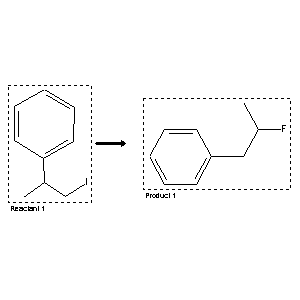

|  |
| FA | RX(1); FLST(1); RX(1) |
Reaction (1 of 1)
| Reaction ID | 8554847 |
| Reactant BRN | 1858673 |
| Reactant | (b-iodo-isopropyl)-benzene |
| Product BRN | 1931247 |
| Product | 2-fluoro-1-phenylpropane |
| No. of Reaction Details | 1 |
Reaction Details (1 of 1)
| Reaction Classification | Preparation |
| Yield | 85 percent (BRN=1931247) |
| Reagent | XeF2 |
| Solvent | CDCl3 |
| Time | 4 hour(s) |
| Temperature | 20 |
| Reaction Type | Fluorination; Rearrangement |
| Citation Pointer | 6243733; Journal; Patrick, Timothy B.; Zhang, Likang; Li, Quinhua; JFLCAR; J.Fluorine Chem.; EN; 102; 1-2; 2000; 11 - 16; |
Reference (1 of 1)
| Citation Number | 6243733 |
| Document Type | Journal |
| Authors | Patrick, Timothy B.; Zhang, Likang; Li, Quinhua |
| CODEN | JFLCAR |
| Journal Title | J.Fluorine Chem. |
| Language Code | EN |
| (Series) Volume | 102 |
| Number | 1-2 |
| Publication Year | 2000 |
| Page | 11 - 16 |